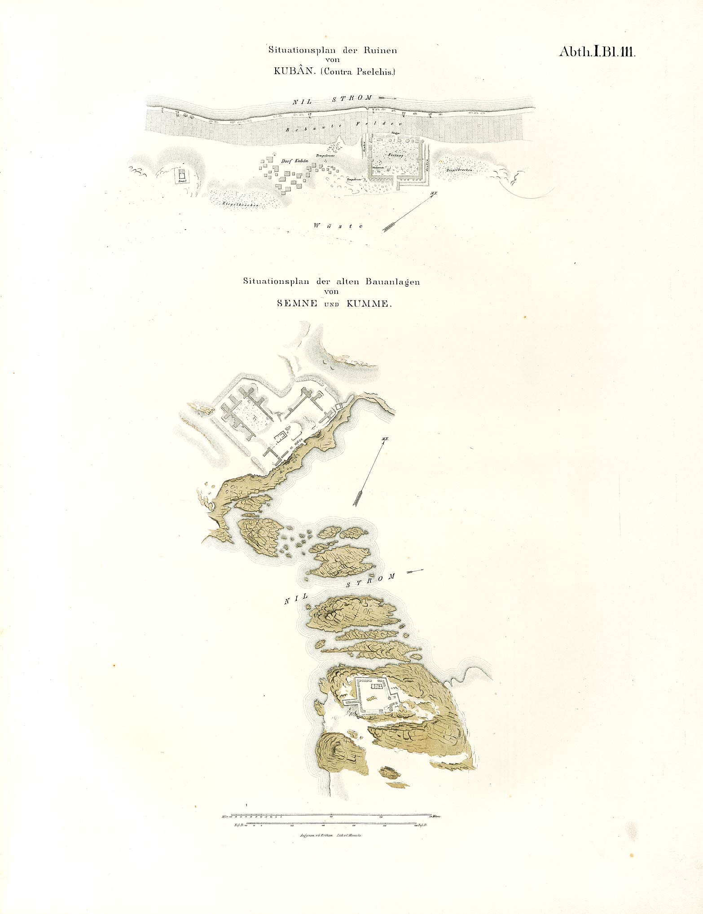

Time Meddlers
On The Nile
- Read Chapter One
- Historical Note
- Nubia
- Abu Simbel and the Aswan Dam
- Reading Group Guide
Abu Simbel and the Aswan Dam

Abu Simbel consists of two monumental rock temples in southern Egypt along the Nile approximately 290 km southwest of Aswan. The Great Temple of Ramses II, mentioned in Time Meddlers on the Nile, is fronted by four immense seated statues of Ramses II carved into the mountain, directly from the sandstone bedrock. It's aligned in such a way as to allow the sun's rays to penetrate the temple and illuminate Ramses' sanctuary twice a year on October 22 and February 22.
A 19th dynasty pharaoh of Egypt, Ramses II ruled for 67 years during the 13th century BCE, and constructed a wealth of monuments along the Nile banks, as well as modifying previous constructions. He began to build the temple complex in approximately 1284 BCE, an enterprise that took 20 years. It was one of six rock temples erected in Nubia during this era. The complex was called "Temple of Ramesses, beloved by Amun."
William Y Adams suggested in his book Nubia, Corridor to Africa, that not only traditional Nubians resided near Abu Simbel and the fortress of Buhen, but also possibly the Medjay, ancient warriors for the Egyptian pharaohs, raiders and occasionally farmers along that stretch of the Nile at different time periods. Near Buhen, he discovered pan graves, oval-shaped, that were unique and suggested a cultural sub-group of Nubians. I found this archaeological evidence fascinating, particularly after tracing the Medjay forward and backward through time. See my Historical Note to learn more about my research.
Suffice it to say, the Medjay were originally known for their policing habits, particularly protecting Egyptian temples and palaces.
Over time the temples of Abu Simbel became buried in sand. At first, around the 6th century BCE, the statues of the main temple were covered up to their knees, revealing an odd group of legless pharaohs. Sand continued to rise and soon obliterated most of the temple. Finally, in 1813, Swiss orientalist J.L. Burckhardt discovered the top frieze of the main temple. Burckhardt discussed his discovery with Giovanni Belzoni, an Italian explorer in Egypt at the time, who then travelled to the site, but couldn't unearth the entrance. In 1817, Belzoni returned and managed to dig out the entrance and explore the complex. He confiscated everything he could remove.
Eventually Egyptologists and tourists began to visit Abu Simbel and marvel at it. But in 1959 this relic, along with several other remnants of Egyptian civilization and Nubian culture, were about to be destroyed. The construction of the Aswan High Dam was imminent and rising flood waters that would eventually become Lake Nasser threatened to obliterate the temple. UNESCO set out to rescue the site, among a few others, and begged the world's assistance in donations. Thus the Abu Simbel temples were salvaged from 1964 to 1968 at a cost of 80 million dollars USD. Both temples and part of the mountain were cut into large blocks, dismantled and reassembled 65 m higher and 200 m back from the river, in what many consider one of the greatest feats of archaeological engineering.

Abu Simbel consists of two temples. The Temple of Ramses II, is of greater size and therefore the most impressive. Devoted to three Egyptian gods at the time: Ra-Harakhty, Ptah and Amun, the facade is thirty-three meters high and thirty-eight meters wide, and guarded by four twenty-meter statues of Ramses II. At some point in history, an earthquake damaged one of the statues, leaving only the lower portion intact, but the head and torso still rest complacently at the statue's feet. Twenty-two baboons are sculpted at the top, their arms raised in supplication to the rising sun. Inside, eight statues of Ramses II, modeled after the god Osiris, serve as pillars—mentioned in Time Meddlers on the Nile when Sarah is kidnapped and trapped in the temple.
Abu Simbel, she thought, awestruck, despite her situation. Made by Ramses II. The statues' soaring height bedeviled Sarah's eyes, making her feel like she was walking under the throne of a god. Many gods, actually, since there were four seated statues of Ramses with smaller replicas of Nefertari and possibly Ramses' mother and other royal women, even a prince, sculpted beside and between his feet. The men prodding her forced her up a ramp, then stopped at a massive wooden door sealing the temple entrance. In astonishment Sarah watched as they produced a golden key to unlock the door.
. . . They steered her to the right and thrust her to the ground. She couldn't see anything until one of the men lit a torch and held it high, illuminating brilliant frescoes of the pharaoh and Egyptian gods along with a number of hieroglyphs. More detailed statues of Ramses II bordered the path, grim-faced guardians to the temple's entrance.
The interior of this temple is fashioned in a triangular layout, with rooms that shrink in size from the wide entrance to the tapered sanctuary.
The smaller temple, the Temple of Nefertari, is dedicated to the goddess Hathor, personified in Ramses' most beloved wife Nefertari (the pharaoh had 200 wives and concubines). Six statues, four of Ramses II and two of Nefertari, guard the entrance. All six are the same height, an odd arrangement that may indicate how deeply Ramses adored and respected his favourite wife.
The Aswan High Dam and Lake Nasser

When Egypt built the high dam to prevent the cyclical flooding of the Nile—which threatened people who lived along the Nile banks—they didn't anticipate the complications that would follow. The rich soil that gives Egypt its wealth of fertile land along the Nile banks came from the Ethiopian highlands transported through the Blue Nile, and now the salinity of the river has increased and the rich soil can no longer reach Egypt. How did Egypt rise to such power and become an advanced civilization in the past? Because it could provide ample food for its people.
In order to build this dam, the land behind it was flooded—Nubian land. Nubia contains dozens of archaeological sites that were threatened, twenty-four temples, fortresses and tombs, including Dendour Ellessiya, Amada and wadi al-Sebowa. Very few were moved, most notably Philae, Kalabsha and, as mentioned above, Abu Simbel.

When the Aswan Dam was constructed in the 1960s, over 100,000 Nubians became displaced. Some moved north into Egypt, and others south into Sudan. New Nubia is located in the reclaimed desert area known as Kom Ombo. Egyptian Nubia was originally made up of forty-three villages along the Nile River over an area of 350 kilometers. It covered a stretch of land from the First Cataract at Aswan to the Sudanese border town of Wadi Halfa. Today, New Nubia exists in an area five kilometers long and five kilometers wide.
Before the dam was constructed, a number of planet-wide missions began excavating for the buried treasures beneath Nubian soil. Many monuments were saved, some re-erected near their original locations on high ground (such as Abu Simbel), a number of others moved to Khartoum in the Sudan, while some small temples were actually given away to foreign governments who participated in the rescue operation. The temple of Dendur now resides in the Metropolitan Museum of Art in New York, the Temple of Debod is currently located at City Park in Madrid Spain, the rock cut temple of el-Lessiya is at Museo Egizio in Turn, Italy, the gateway of the temple of Kalabsha in the Agyptisches Museum in Berlin, Germany, and the Taffa Temple at Rijksmuseum van Oudheden in Leiden, Netherlands. A temple from Semna, kumma (Semna East), two of the temples located at the famous (and now infamous) fortress of Buhen, a temple from Aksha (Serra West) and the rock cut tomb of Djehutihotpe were all moved to Khartoum in the Sudan. These temples and artefacts were rescued. But what about those that weren't, and are now buried under Lake Nasser?
Lost artifacts
Quban (Kuban)
Quban once towered over the east bank of the Nile across from the temple of Dakka, just south of the First Cataract, a strategic location for trade and protection from marauders. This fortress was likely constructed during the 12th Dynasty by Senusret I (1971-1926 BCE), but it might have had an Old Kingdom (2686-2160 BCE) component. Three circular walls with rounded bastions surrounded the fortress. Additions were made during the reign of Ramses II. To add to its unfortunate demise, the temple was constructed of mudbrick, a cheaper and easier material to mold in hot climates. This made it virtually impossible to save—I do believe that excavating mudbrick would be a dubious enterprise. During the New Kingdom (1550-1070 BCE), Quban became more vital to Egypt and its trolling for resources, since it was located near the gold mines of Wadi 'Allaqi. Several temples were protected within Quban's walls, but little archaeological investigation was done and any further knowledge is irretrievable.
Faras (Pachoras)
Now submerged under Lake Nasser, Faras was founded during the Middle Kingdom (2040-1750 BCE), and was simply a small fortress at the time. In the New Kingdom period (1550-1070 BCE) a number of small temples were added, including an 18th Dynasty (1341-1323 BCE) temple of Tutankhamun. The town might have been known as Hathor of Ibschek, referring to a particular temple dedicated to the goddess. It has been suggested that this temple was originally constructed by Tuthmosis III (someone I may be writing about in the future). In later years, Tutankhamun and Ramesses II saw the temple enlarged to contain a square courtyard with a portico on each side, a hypostyle hall with twelve columns and a sanctuary.

During the third century, the time of the Meroë kingdom (800 BCE – 350 AD), Faras became a more prominent town known as Paharas or Pachoras. Archaeologists suspect it may have been a provincial capital from the first century BCE to the first century AD, after the discovery of a palace, settlement and royal burials. From the seventh century onward it became the capital city of Christian bishops in Nubia. A cathedral, six other churches, a monastery, and pottery workshops were erected at the site. Before the construction of the dam, 120+ Byzantine-Coptic style paintings in tempera on dry plaster were rescued, many of which are now housed in Sudanese museums and the National Museum in Warsaw.
Mirgissa

Mirgissa was located in the region of the Nile's second cataract on the west bank of the river, fifteen kilometers south of Wadi Halfa. Here, a small New Kingdom temple of Hathor was erected, perhaps replacing an earlier Middle Kingdom structure. Originally known as Iken, it possessed several large well-built granaries. An inscription from the fort of Semna reads as follows:
The southern boundary which was created in the 8th year under the Majesty of Senusret III to prevent any Nubian from passing it when faring northwards, on foot or by boat, as well as any cattle of the Nubians. An exception is a Nubian who shall come to barter at Iken, or one with an official message.
The Medjay, mentioned in Time Meddlers on the Nile and in my Historical Note, patrolled the desert at this time for the Egyptians. (Remember they acted as policemen for the Egyptians during the Egyptians' rule of Nubia.) They were presumably paid partly in grain. So it is suggested that Mirgassa may have been a major site for trade, but marked a boundary which Nubians weren't allowed to cross. An interesting temple, which no longer exists.
Of course, the list of possible archaeological sites that were lost to the waters of Lake Nasser are more than simply numerous. As Adams relates in his book, "Four thousand years after their building, and three thousand years after their final abandonment, the mud walls of these gargantuan relics still rose, in places, over forty feet above the desert sand. With Abu Simbel, they rank among the foremost monuments to Egyptian enterprise in Nubia or anywhere else. But whereas Abu Simbel has been saved, to UNESCO's and the world's credit, the fortresses have disappeared without a trace beneath the waters of the Nile." Many graves that would give archaeologists more insight into Nubian culture and traditions were also drowned.